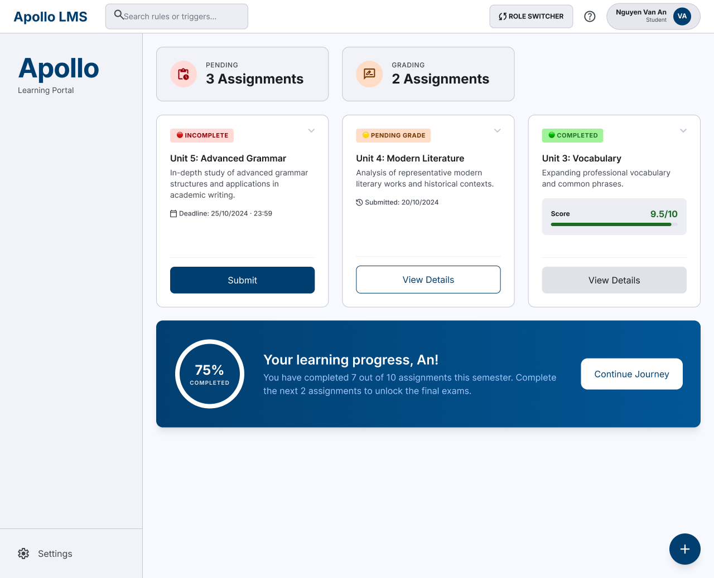
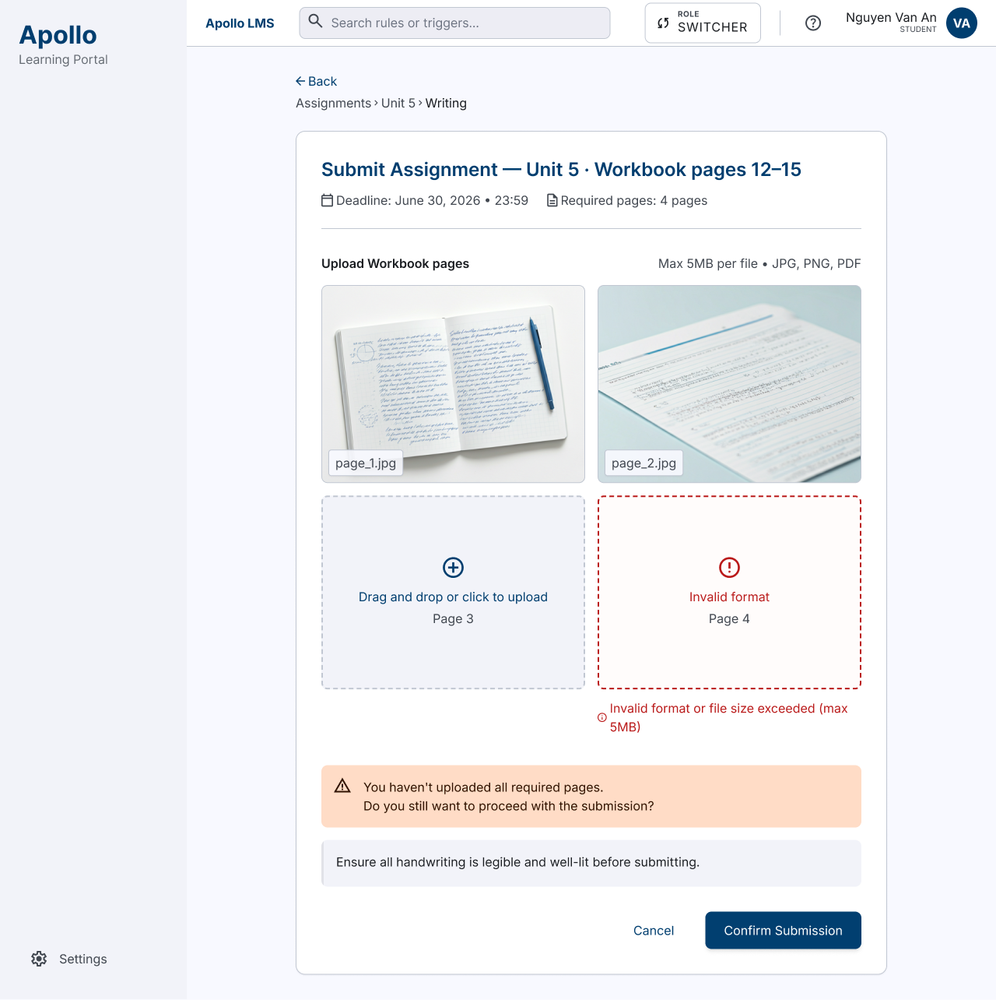
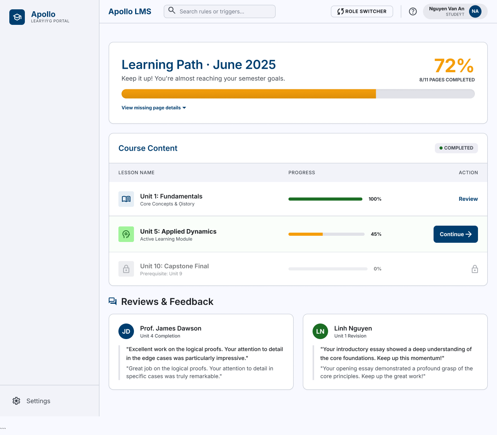
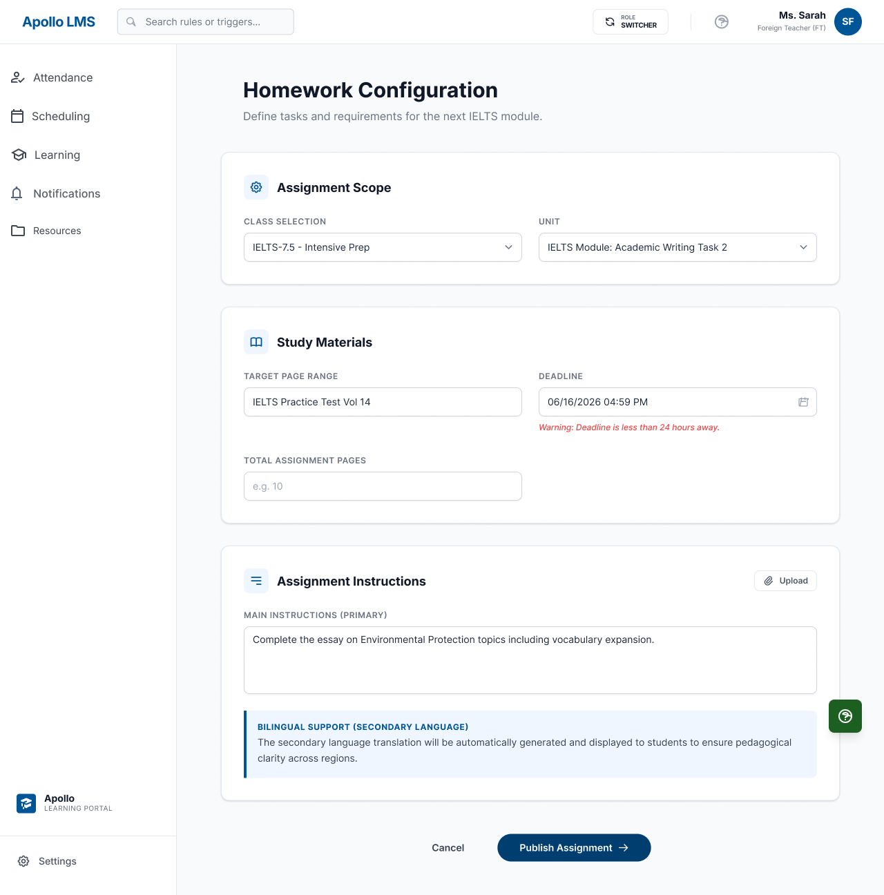
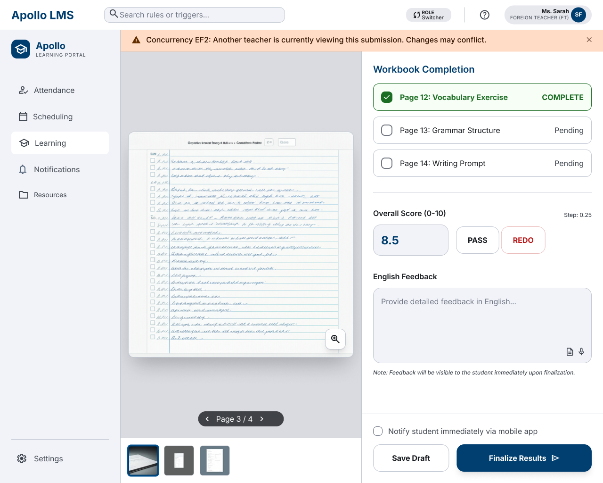
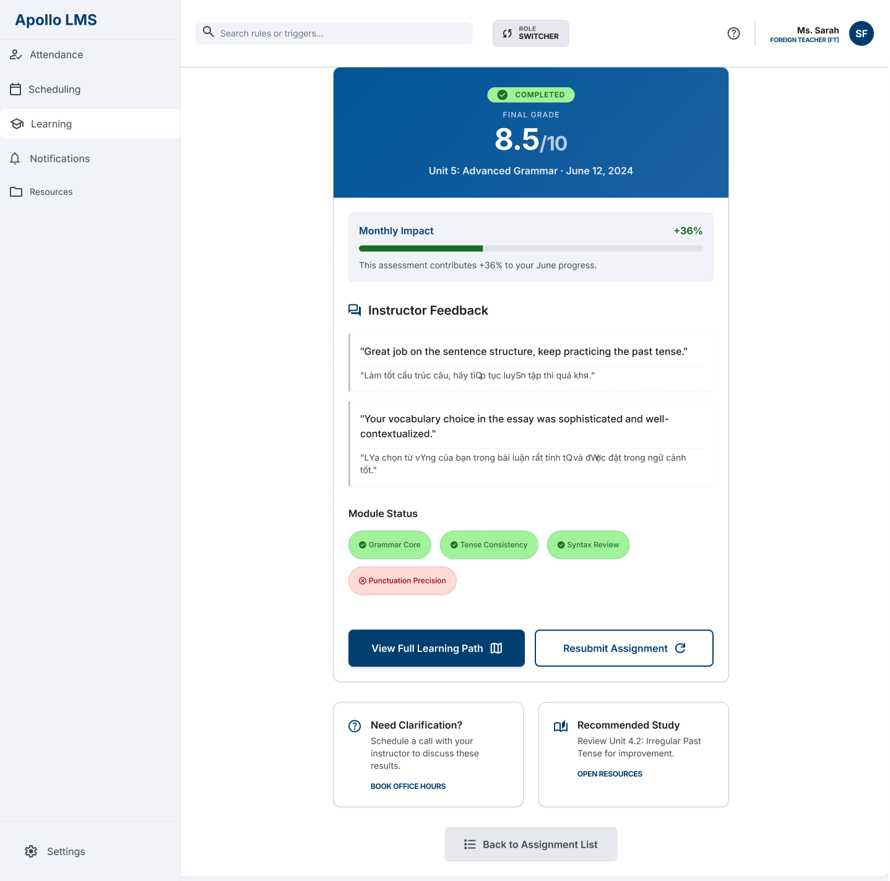

University of Economics and Law - VNU HCMC
Ho Chi Minh City, Vietnam
I am a Management Information Systems student at the University of Economics and Law - VNU HCMC, specializing in Digital Business and Artificial Intelligence.
As a former Mathematics-specialized student, I have developed strong logical thinking and analytical skills, which help me approach business problems in a structured and systematic way.
I am passionate about Business Analysis, problem-solving, and turning business requirements into practical solutions.
Through academic projects, I have developed experience in BPMN, UML, BRD/SRD, SQL, Python, database design, and data analysis.
I enjoy learning, collaborating with others, and exploring how technology can solve business problems.
To become a Business Analyst Intern, where I can apply my knowledge, gain real-world experience, and contribute to meaningful projects.
01
INFORMATION SYSTEMS ANALYSIS & DESIGN
PHÂN TÍCH VÀ THIẾT KẾ HỆ THỐNG THÔNG TIN QUẢN LÝ TRUNG TÂM TIẾNG ANH APOLLO
This project was developed as part of the Information Systems Analysis and Design course.
The project focuses on analyzing and designing an information system for Apollo English Center, with the goal of improving and integrating learning, teaching, and operational processes.
The proposed system is an integrated Web Portal that supports both internal staff and parents/students.
02
APPLIED THROUGHOUT THE PROJECT
Analyzing system functions, processes and business requirements.
Defining and documenting system requirements through SRD.
Applying User Stories and BPMN to model business processes.
Designing Use Case, Class Diagram and Sequence Diagram.
Designing data structures, relationships and database models.
Developing project methodologies, deliverables and system documents.
03
MY ROLE & DELIVERABLES IN THE PROJECT
Applying appropriate methodologies throughout the system analysis and design process.
Preparing and organizing project deliverables based on the system analysis and design requirements.
Analyzing and documenting software requirements for the proposed system.
Analyzing and designing the Assignment Submission & Learning Progress Tracking function.
Designing database structures and relationships to support the system.
Turning business requirements into structured system models and practical solutions.
04
SYSTEM MODELING & USER INTERFACE
Applied system analysis and design techniques to model the Assignment Submission & Progress Tracking workflow.
I worked with Use Case, BPMN, Class, and Sequence Diagrams to describe system requirements, business processes, system structure, and interactions between components.






I used Google Stitch to create the initial user interface concepts based on the analyzed system requirements and user flow.
After generating the interface, I exported the design to Figma for further editing, organizing, and refining the UI elements.
Through this project, I gained practical experience in analyzing business requirements, modeling system processes, designing system structures, and connecting requirements with user interfaces.
I also improved my ability to document and communicate system solutions through visual modeling.